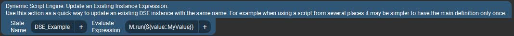

Available Actions

Evaluate Expression

This is the most basic action which creates a new State with the value of whatever the given expression results in. The other action described below all share the same options (as well as add some others). The common options are only explained here.
- State Name - This will be the name given to the new Touch Portal State once it is created. Once created it will appear in Touch Portal's various value selector lists.
The name is also used in a few other places to refer to this instance of a "dynamic script."
- Evaluate Expression – This is what you want to do. It can be any one-line valid JavaScript; basic math, reading/writing files, sending dynamic button icons... The limit is your imagination and the single-line nature of the action. There are some examples on the front-page README.
- Engine Instance - This is an important distinction about how and "where" your script is run. Most one-line scripts will probably want to use the
Shared types, while more complex scripts (described below) will likely want to use the Private types. Here is the difference:
- Shared - All expressions/scripts are run in the same script evaluation engine instance, with a shared "global scope" as if they were all, essentially, in the same script file. This means, for example you could share variables or other data between script instances. It also means one expression/script could overwrite variables of another script in the same shared engine. For one-line expressions this is usually not an issue since they likely won't create variables anyway.
All Shared engine instances run in the same processing thread. That means they cannot run at exactly the same time, one will need to finish before the next one will be processed. This is typically more efficient for relatively quick operations like math or text formatting or really anything that isn't going to take time, like reading a file or requesting a URL.
- Private - Each script gets its own processing engine environment to work in. Scripts in private instances cannot interfere with each other and share no data in the global scope. This makes them suitable for more complex scripts which may need to create global variables or otherwise ensure there is no interference.
Private engine instances run in their own processing thread. This means multiple scripts can be running at the same time in parallel, and slower ones will not delay other processing. For example if you have an operation like reading a file or requesting a URL, it is definitely better to run that in a Private instance (even if it's only a "one liner"). On the other hand it takes slightly longer to start a new thread so for quick operations it doesn't make sense (talking nanosecond scale here).
- Create State at Startup - Selecting anything besides "No" will cause the plugin to create the named State when it starts up (presumably at the same time as Touch Portal starts).
The action's configuration will be saved by the plugin to a settings file and automatically loaded the next time the plugin starts. You can also specify what "kind" default value to use:
- Fixed Value - The default will be exactly what you enter in the Default Value text box. No script evaluation will take place. You could leave the value empty, in which case the state will be created with an empty (blank) default.
- Custom Expression - This is an expression which will be evaluated by the configured engine at startup, instead of the primary/main expression the action uses. The idea here is that dynamic values used in the main expression may not exist yet, for example, when Touch Portal first starts up. Or perhaps you just want to do something else the first time it runs.
- Use Action's Express - This will simply run the same expression at startup as specified in the Evaluate Expression field.
- Default Value/Expr - As explained above, here you could enter a fixed default value to use at startup, or a custom expression to use instead of the action's main one.
This field is ignored when the Create State at Startup is set to "No" or "Use Action's Expression."
Load Script File

This actions lets you load a JavaScript file and then (optionally) add an expression to execute after the script file is loaded. For example to invoke a function within the script while passing it some dynamic arguments.
- Script File - This is simply a path to your script file. By default, paths are relative tom the plugin's install folder, so you will likely want to use full paths here.
- You can change the base path from which scripts (and modules, below) are loaded in the plugin's Settings in Touch Portal (gear icon at top right -> Plugin-in -> then select this plugin).
Specify a path in the Script Files Base Directory setting. All script and module file paths will now be relative to this base directory.
(You can still use absolute paths in script actions, of course, this setting does not affect that.)
- Paths on Windows can use forward (
/) or back (\) slashes.
- Paths must be typed or pasted in (until the file selector widget for plugins is fixed in Touch Portal).
- Append Expression - This is the JavaScript to run after the file has been loaded and evaluated. The expression is literally appended after the file contents. Typically this would be a call into a function from the loaded script, as shown in the example, but it could be any valid code that works with your loaded script file.
The rest of the fields are as described above.
Import Module File

This is a somewhat more advanced version of the Load Script File action. It is very similar but the advantage of JavaScript modules are that:
- They can import other JS modules for efficient code reuse and integrating with 3rd party modules.
- Are cached in the script engine after first use. So they only load from disk once, and after that each subsequent import uses the cached version.
However since they're cached, when you make changes to a module's code you must re-create the instance or reload the script environment (there are actions for that, see below). If you don't need to use other modules, it can be quicker to develop and test your code as a standalone script (the above action) and then turn it into a module once you have it working as you'd like.
- Import from file - Specify the module's script file to load. This is just a path to a file, the same as described in Load Script File action above.
- as alias - To use a function from a loaded module, the module must have an alias (these are JS rules). In a typical JS you'd usually use something like
import * from "mymodule.js" as MyModule and then call functions from the module as MyModule.someFunction(). This alias field is the equivalent of the "as name" part of the import statement. The default import alias is just "M" to keep things short, but you can use whatever you want.
- Evaluate expression - Again this is like in the Load Script File action above. The expression gets invoked after the module has been imported. You can use it to call a function from the loaded module, for example. To call a module function the alias must be used here, like in the example.
Note that modules must explicitly export a function (or variable) before it can be used from outside the module. The same applies here, the function you call in the expression must be marked as exported in the module itself, otherwise you get an undefined value TypeError.
The rest of the fields are as described in Evaluate Expression action.
Update Existing Instance

This is a very simple action which evaluates an expression using an already existing dynamic script instance. An instance with the same State Name must have already been created for this to work. The idea is that if you want to use the same instance in multiple places, it may be simpler to have the main, full, definition in only one place, and simpler "update" action(s) in other places. This way one doesn't need to update all actions if a file path changes or you want a different default value.
Anonymous (One-Time) Script

Sometimes you may just want to run some code but don't need to have any result returned as a State, and don't need the instances to persist between uses for any other reason.
This action combines the first 3 types of actions above, meaning from here you can do anything from a simple expression to loading a module.
- Action Type - Corresponds to one of the 3 ways of running code described above – Evaluate an Expression or Load Script/Module and run some function from that.
- Evaluate Expression Applies to all 3 Action Type choices. It is required for the "Expression" type, and optional for the "Script" and "Module" types.
- Script/Module File - Required for "Script" and "Module" action types.
- Module alias - Required for "Module" action types. If blank, defaults to "M".
- Engine Instance - As described in Evaluate Expression action.
Since this type of script doesn't persist or have a State associated with it, there are no options to run it at startup like with the others.
Plugin Actions
This is a collection of utilities for working with created states/instances. It can be used to perform a variety of tasks based on the "Action" parameter. Each of the actions can be applied to all instances, only Shared or Private engine types, or individual instances that have already been created.
- Delete Instance - Complete deletes the Touch Portal State and any other data related to this script instance. If the instance has been previously saved to settings (with a default value) the it will be removed from there as well. The Value field doesn't apply to this action.
- Set State Value - This is just a convenience for clearing or setting a State's value manually, for example to trigger a Touch Portal change event. Specify the value to set the state(s) to in the Value field.
- Reset Engine Environment - This restores an script environment (JS "global object") back to default, removing any variables/object/etc created by scripts or expressions. If working with modules, this is a good way to clear the module cache. The Value field doesn't apply to this action.
Read Next: Status and Logging